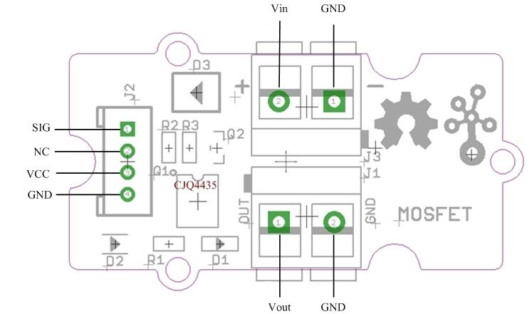
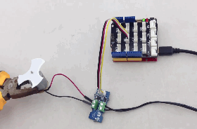

Grove – MOSFET enables you to control higher voltage project, say 15VDC, with low voltage, say 5V, on microcontroller. MOSFET is also a kind of switch, but its switching frequency can reach up to 5MHz, much faster than normal mechanical relay. There are two screw terminals on the board. One for outer power source and the other for device you want to control. Grove – MOSFET will pass the power from one end to another when closed. But if outer power source is absent, your device can still draw power from microcontroller via the Grove interface.
Model:ACT00200P
Working voltage: 5V
Vin: 5 ~ 15V
MOSFET Model: CJQ4435

Vin: accepts 5V ~ 15V power of which current is less than 2A.
Vout: attach actuators here.
Here we demonstrates how to use Grove - MOSFET to control a motor. We provide power for it with external power source, but if your controlled device needs current smaller than 300mA, Seeeduino can totally support it and no extra power source needed.

// demo of Grove - MOSFET
// use pin 6 to control a motor
int motorPin = 6;
void setup()
{
Serial.begin(38400);
pinMode(motorPin, OUTPUT);
Serial.println("Grove - MOSFET Test Demo!");
}
void loop()
{
motorOnThenOffWithSpeed();
motorAcceleration();
}
void motorOnThenOffWithSpeed()
{
int onSpeed = 200; // a number between 0 (stopped) and 255 (full speed)
int onTime = 2500;
int offSpeed = 50; // a number between 0 (stopped) and 255 (full speed)
int offTime = 1000;
analogWrite(motorPin, onSpeed);
delay(onTime);
analogWrite(motorPin, offSpeed);
delay(offTime);
}
void motorAcceleration()
{
int delayTime = 50;
for(int i=0; i<256; i++)
{
analogWrite(motorPin, i);
delay(delayTime);
}
for(int i=255; i>=0; i--)
{
analogWrite(motorPin, i);
delay(delayTime);
}
}
1.You should have got a raspberry pi and a grovepi or grovepi+.
2.You should have completed configuring the development enviroment, otherwise follow here.
3.Connection
4.Navigate to the demos' directory:
cd yourpath/GrovePi/Software/Python/
nano grove_mosfet.py # "Ctrl+x" to exit #
import time
import grovepi
# Connect the Grove MOSFET to analog port D6
# SIG,NC,VCC,GND
mosfet = 6
grovepi.pinMode(mosfet,"OUTPUT")
time.sleep(1)
while True:
try:
# Full speed
grovepi.analogWrite(mosfet,255)
print "full speed"
time.sleep(2)
# Half speed
grovepi.analogWrite(mosfet,128)
print "half speed"
time.sleep(2)
# Off
grovepi.analogWrite(mosfet,0)
print "off"
time.sleep(2)
except KeyboardInterrupt:
grovepi.analogWrite(mosfet,0)
break
except IOError:
print "Error"
5.Run the demo.
sudo python grove_mosfet.py
Grove - MOSFET Eagle File
CJQ4435 Datasheet
MOSFET_WIKI
Getting started with Arduino